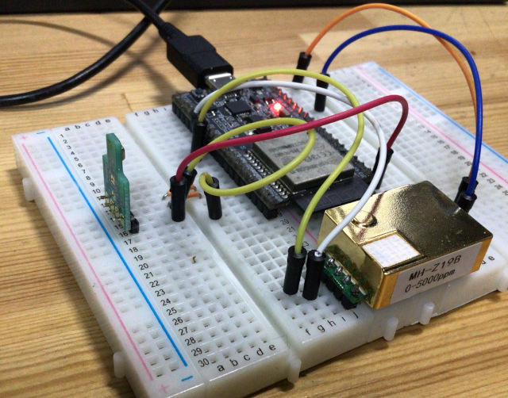

<!DOCTYPE html>


<html lang="ja" data-theme="">
<head>
    
        
<meta charset="utf-8">
<meta name="HandheldFriendly" content="True">
<meta name="viewport" content="width=device-width, initial-scale=1.0">
<meta name="referrer" content="no-referrer-when-downgrade">

<title>EPS32とPrometheusで作業環境のデータ収集している話 - チラ裏</title>
<meta name="description" content="Anubis is a simple minimalist theme for Hugo blog engine.">

<link rel="icon" type="image/x-icon" href="https://blog.naoyakohda.net/favicon.ico">
<link rel="apple-touch-icon-precomposed" href="https://blog.naoyakohda.net/favicon.png">


    


    
    
        
    
    

    
        <link rel="stylesheet" href="https://blog.naoyakohda.net/css/style.min.4833d18af9ac02c09674dcc658c73189b637bb66a103ec29492cc8decdf35dc8.css" integrity="sha256-SDPRivmsAsCWdNzGWMcxibY3u2ahA&#43;wpSSzI3s3zXcg=">
    


<meta property="og:title" content="EPS32とPrometheusで作業環境のデータ収集している話" />
<meta property="og:description" content="EPS32とPrometheusで作業環境のデータ収集している話" />
<meta property="og:type" content="article" />
<meta property="og:url" content="https://blog.naoyakohda.net/post/esp32_environment_logger/" />
<meta property="article:published_time" content="2020-12-05T00:00:00+00:00" />
<meta property="article:modified_time" content="2020-12-05T00:00:00+00:00" />

<meta name="twitter:card" content="summary"/>
<meta name="twitter:title" content="EPS32とPrometheusで作業環境のデータ収集している話"/>
<meta name="twitter:description" content="EPS32とPrometheusで作業環境のデータ収集している話"/>


    
<script type="application/javascript">
var doNotTrack = false;
if (!doNotTrack) {
	window.ga=window.ga||function(){(ga.q=ga.q||[]).push(arguments)};ga.l=+new Date;
	ga('create', 'G-5EZGJQMW1X', 'auto');
	
	ga('send', 'pageview');
}
</script>
<script async src='https://www.google-analytics.com/analytics.js'></script>


    
</head>
<body>
    <a class="skip-main" href="#main">Skip to main content</a>
    <div class="container">
        <header class="common-header"> 
            
                <h1 class="site-title">
    <a href="/">チラ裏</a>
</h1>

    <nav>
        
        
        <a class="" href="https://blog.naoyakohda.net/post/" title="">Posts</a>
        
    </nav>


            
        </header>
        <main id="main" tabindex="-1"> 
            
    
    
    <article class="post">
        <header class="post-header">
            <h1 class="post-title">EPS32とPrometheusで作業環境のデータ収集している話</h1>
        </header>
        <div class="content">
            <p>この記事は <a href="https://adventar.org/calendars/5174">Akatsuki Advent Calendar 2020</a> 5日目の記事です.</p>
<h2 id="はじめに">はじめに</h2>
<p>アカツキでサーバエンジニアをしている <a href="https://github.com/nasshu2916">Naoya kohda</a> です。現在、在宅勤務をしているのですが、厚生労働省が<a href="https://www.mhlw.go.jp/stf/newpage_01603.html">在宅勤務の作業環境のガイドライン</a>として次のようにしています。</p>
<blockquote>
<p>テレワークを行う作業場が、自宅等の事業者が業務のために提供している作業場以外である場合には、事務所衛生基準規則（昭和47年労働省令第43号）、労働安全衛生規則及び「情報機器作業における労働衛生のためのガイドライン」（令和元年7月12日基発0712第3号）の衛生基準と同等の作業環境となるよう、テレワークを行う労働者に助言等を行うことが望ましい。</p>
</blockquote>
<p>要するに「在宅勤務するならオフィスと同じ様な環境になるように努力しろ」ということです。なので、作業環境が妥当か聞かれた時にすぐにエビデンスを出せるように、作業環境のデータを収集するセンサを作りました。</p>
<h2 id="センサからデータの収集">センサからデータの収集</h2>
<h3 id="仕様パーツ">仕様パーツ</h3>
<p>マイコンにESP32 DevKitCを使いました。</p>

<p>Arduinoでも良かったのですが、デフォルトでWiFiが使えるのと安いから選びました。<a href="https://github.com/espressif/arduino-esp32">Arduino Core for the ESP32</a>を使えばArduinoと同じ様に書き込みができます。ただloop()で処理を行うのでせっかくのデュアルコアを無駄にしている感があるのですが。</p>
<p>CO2センサは <a href="https://www.aliexpress.com/wholesale?SearchText=MH-Z19B">aliexpress</a> で買ったMH-Z19Bを使いました。国内でだとamazonとかで購入できます。MH-Z19BはCO2センサの中では安く2000円台で入手できます。</p>
<p>温湿度センサは<a href="https://akizukidenshi.com/catalog/g/gK-14469/">秋月電子</a>で買ったBME680を使いました。
</p>
<p>圧力、湿度、温度とガスの情報を計測できるセンサです。</p>
<p>MH-Z19Bはハードウェアシリアル経由、BME680はI2C経由で接続しました。</p>
<p><a href="https://github.com/nasshu2916/ESP32_exporter">ソースコード</a></p>
<p>作ったものは下の画像のものです。(基板作るのが面倒くさくてブレッドボード上で動かしてます。)
</p>
<h2 id="監視">監視</h2>
<p>ESP32で取得した値を何かしらで収集したいのですが、その条件として以下がありました。</p>
<ol>
<li>CO2の濃度が高くなればどこかに通知したい</li>
<li>過去の情報も見たい</li>
<li>面倒くさいので楽な実装が良い</li>
</ol>
<p>1.は Slack のMessage API を使えば簡単に解決できます。ただ、”一定の閾値を超えたらリクエストを投げる”みたいな実装にすると、閾値を変えられるエンドポイントを作り、その値を EEPROM(ESP32の場合、疑似EEPROM)に保存するような実装をしないといけません。</p>
<p>自宅で Proxmox でサーバ運用しているのですが、自宅サーバの監視ツールと別になると管理が面倒くさくなるという理由で、自宅サーバの管理ツールとして使っている prometheus と grafana を使うことにしました。そのため、Prometheusがメトリクス収集できるようにESP32にexporterを作りました。</p>
<p>prometheusで収集した情報をgrafanaを使って可視化とアラートを送るのでESP32側で通知の実装をしなくて済むので楽です。</p>
<p>grafanaで可視化した画面は下の様な感じです。
</p>
<p>これで作業環境が状態がすぐに分かるようになりました。</p>
<h2 id="まとめ">まとめ</h2>
<ul>
<li>CO2と温度、湿度センサの値をESP32で値を読み取る</li>
<li>EPS32のデータをPrometheusで収集する</li>
<li>grafana側で通知の設定ができるので実装が楽</li>
</ul>
        </div>
        

    


<div class="post-info">
    
        <div class="post-date">2020-12-05</div>
    
    <div class="post-taxonomies">
        
            
    </div>
</div>

    </article>

    
        
    

    


        </main>
        
            <footer class="common-footer">
    
    

    <div class="common-footer-bottom">
        
        <div class="copyright">
            <p>© Naoya Kohda, 2020<br>
            Powered by <a target="_blank" rel="noopener noreferrer" href="https://gohugo.io/">Hugo</a>, theme <a target="_blank" rel="noopener noreferrer" href="https://github.com/mitrichius/hugo-theme-anubis">Anubis</a>.
            </p>  
        </div> 

        

    


   
    </div>
</footer>

        
    </div>
</body>
</html>
